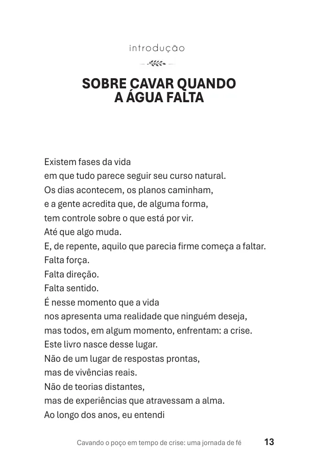

O que você recebe
Uma leitura para acompanhar o seu próximo passo.
Sem fórmulas mágicas. Sem promessas de cura. Uma história honesta para refletir sobre fé, dor e recomeço no seu ritmo.
✓
Leia onde estiver
PDF compatível com celular, tablet ou computador.
✓
Encontre identificação
Uma jornada real sobre luto, silêncio e perseverança.
✓
Tenha companhia
13 capítulos para ler aos poucos, quando fizer sentido.

Veja uma página real antes de decidir.Esta é uma amostra do PDF que você receberá após a compra.

A autora
Isabel Araújo Barros
Em sua primeira obra, transforma vivências pessoais em reflexão sobre fé, crise e continuidade. Um livro publicado, lançado e agora disponível também em versão digital.
Comece sua leituraQuero começar minha leitura
Cavando o Poço em Tempo de Crise
R$ 27,90
E-book digital em PDF
102 páginas e 13 capítulos
Leia no celular, tablet ou computador
Acesso pela Hotmart após confirmação
Garantia de 7 dias
7d
Compra protegida por 7 diasSe a leitura não for o que você esperava, consulte as condições de reembolso da Hotmart.
Importante: esta oferta é do e-book digital em PDF, não do livro físico. Pagamento processado pela Hotmart.
Se esta história encontrou a sua
Você não precisa ter todas as respostas hoje.
Talvez precise apenas encontrar forças para continuar — um passo de cada vez.
Quero começar minha leitura — R$ 27,90PDF digital · compra única · acesso após a confirmação